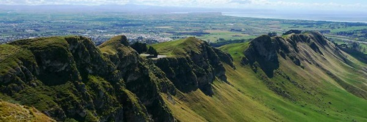

Huka Falls
Huka Falls
The Waikato River, New Zealand's longest river, moves gracefully north from Lake Taupo between banks 100 metres apart.
 Nuget Point Lighthouse
Nuget Point Lighthouse
Nugget Point is one of the most distinctive landforms along the Otago coast. It's a steep headland with a lighthouse and a scattering of rocky islets (The Nuggets).

Te Mata Peak
Te Mata Peak is at the western boundary of the wine-producing Heretaunga Plains and stands nearly 400 metres above sea level.
 Aratiatia Rapids
Aratiatia Rapids
A few times each day the narrow gorge fills with turbulent water surging past at up to 90,000 litres per second.